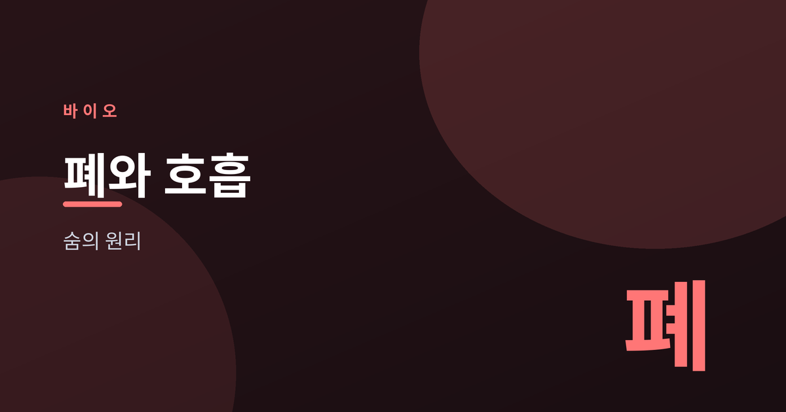
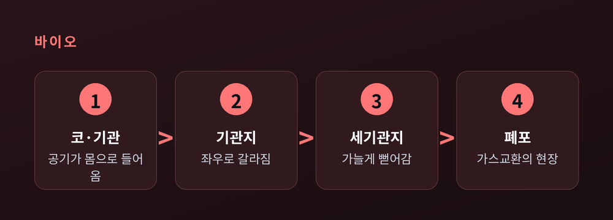
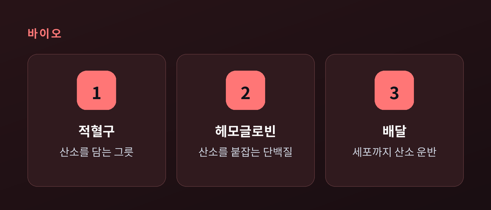
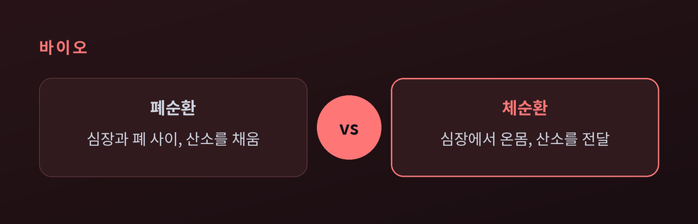
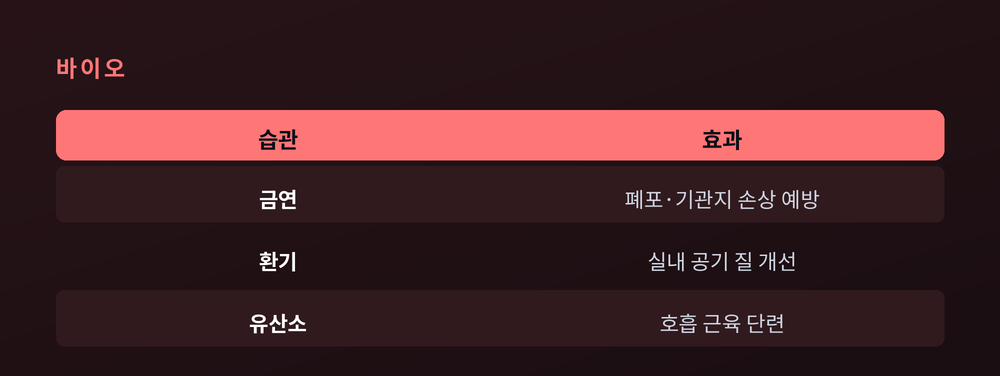

숨은 어떻게 우리 몸을 살리나

이번 글에서는 우리가 매 순간 반복하는 호흡의 원리를 정리해 보겠습니다.
숨을 쉰다는 단순한 행위 안에는, 세포 하나하나를 살리는 정교한 과정이 숨어 있습니다.
공기가 들어와 산소로 바뀌어 온몸으로 퍼지는 여정을 차근히 따라가 봅니다.
호흡의 목적은 두 가지로 요약됩니다.
하나는 산소를 몸 안으로 들이는 일입니다.
다른 하나는 이산화탄소를 밖으로 내보내는 일입니다.
우리 몸의 세포는 산소를 써서 에너지를 만듭니다.
그 과정에서 이산화탄소라는 찌꺼기가 남습니다.
들숨으로 산소를 얻고 날숨으로 찌꺼기를 버리는 것.
호흡은 이 교환을 쉬지 않고 반복하는 일인 셈입니다.
들이마신 공기는 정해진 길을 따라 이동합니다.

코로 들어온 공기는 기관을 지납니다.
기관은 다시 좌우 기관지로 갈라집니다.
기관지는 나뭇가지처럼 점점 가늘어져 세기관지가 됩니다.
그 끝에는 아주 작은 공기주머니, 폐포가 매달려 있습니다.
폐포의 수는 수억 개에 이릅니다.
이 작은 주머니들이 모여, 실제 가스교환이 일어나는 넓은 표면을 만듭니다.
그 표면을 다 펼치면 넓은 방 하나를 덮을 정도라고 합니다.
좁은 가슴 안에 이토록 큰 면적이 접혀 들어가 있는 셈입니다.
폐포 하나하나는 가느다란 모세혈관에 둘러싸여 있습니다.
산소와 이산화탄소는 이 얇은 벽을 사이에 두고 자리를 바꿉니다.
원리는 확산입니다.
농도가 높은 쪽에서 낮은 쪽으로 저절로 옮겨 가는 성질입니다.
폐포 안쪽은 산소가 많고 이산화탄소가 적습니다.
혈액 쪽은 그 반대입니다.
그래서 산소는 혈액으로 들어가고, 이산화탄소는 폐포로 빠져나갑니다.

혈액으로 넘어온 산소는 그냥 떠다니지 않습니다.
적혈구 속 헤모글로빈이라는 단백질이 산소를 붙잡습니다.
헤모글로빈은 산소를 실어 온몸의 세포까지 배달합니다.
그리고 돌아오는 길엔 이산화탄소의 운반을 돕습니다.
피가 붉은 것도 이 헤모글로빈 덕분입니다.
산소가 없으면 세포는 오래 버티지 못합니다.
이 배달이 끊기지 않는 것이 곧 생존의 조건입니다.
정작 폐 자체에는 스스로 부푸는 힘이 없습니다.
숨은 주변 근육이 만들어 냅니다.
들숨에서는 횡격막이 아래로 내려가고 늑간근이 갈비뼈를 들어 올립니다.
그러면 흉강이 넓어지고 안쪽 압력이 낮아집니다.
낮은 압력을 채우려 바깥 공기가 밀려 들어옵니다.
날숨은 그 반대입니다.
근육이 풀리면 흉강이 좁아지고 압력이 높아집니다.
높아진 압력에 밀려 공기가 밖으로 나갑니다.
숨은 힘이 아니라 압력 차이로 드나드는 셈입니다.

혈액은 두 갈래 길을 돕니다.
폐순환은 심장과 폐 사이를 오갑니다.
찌꺼기를 실은 피가 폐로 가 산소를 채우고 돌아옵니다.
체순환은 심장에서 온몸으로 뻗습니다.
산소를 실은 피가 세포까지 닿았다가 되돌아옵니다.
두 순환은 심장을 가운데 두고 맞물려 돌아갑니다.
한쪽에서 산소를 채우면, 다른 쪽에서 그 산소를 실어 나릅니다.
폐에서 채운 산소가 온몸으로 퍼지는 구조입니다.
우리는 숨 쉬는 일을 의식하지 않습니다.
뇌간의 연수가 호흡의 리듬을 자동으로 맡고 있기 때문입니다.
흥미롭게도 연수가 살피는 것은 산소보다 이산화탄소입니다.
피 속 이산화탄소가 늘면 몸은 이를 감지합니다.
그러면 호흡이 빨라져 찌꺼기를 서둘러 내보냅니다.
계단을 오르면 숨이 가빠지는 이유가 여기 있습니다.
몸이 알아서 균형을 맞추는 것입니다.

폐 건강에는 특별한 비법이 따로 없습니다.
가장 확실한 것은 금연입니다.
담배 연기는 폐포와 기관지를 직접 상하게 합니다.
실내 공기를 자주 환기하는 일도 도움이 됩니다.
걷기나 가벼운 달리기 같은 유산소 운동은 호흡 근육을 단련합니다.
다만 이 글은 진단이나 처방이 아닙니다.
기침이 오래가거나 숨이 자꾸 차다면, 반드시 전문의와 상담하시길 권합니다.
정리하면 이렇습니다.
숨은 단순한 반복이 아니라, 몸을 살리는 정교한 순환의 시작입니다.
우리가 무심히 내쉬는 한 번의 숨 — 그 안에 생명을 잇는 일이 담겨 있습니다.